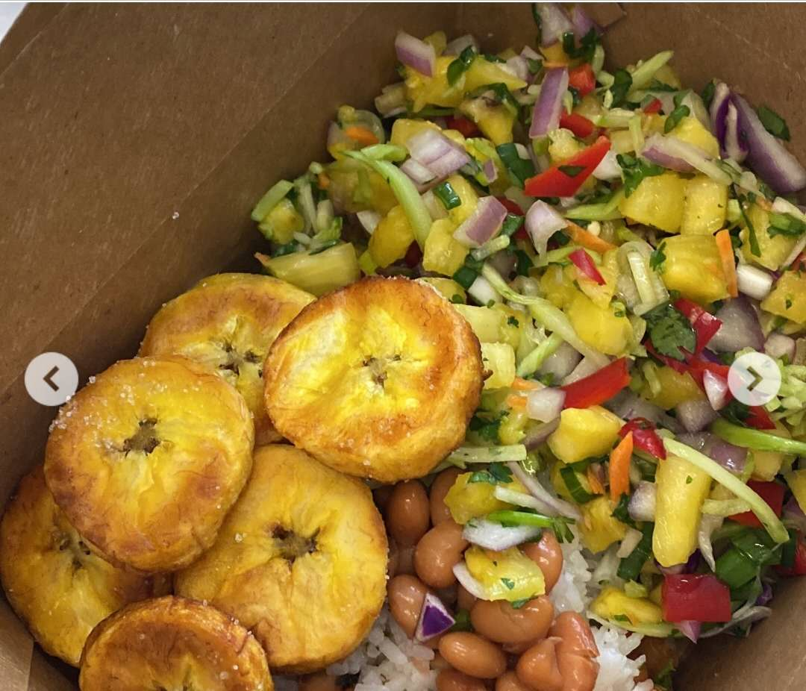
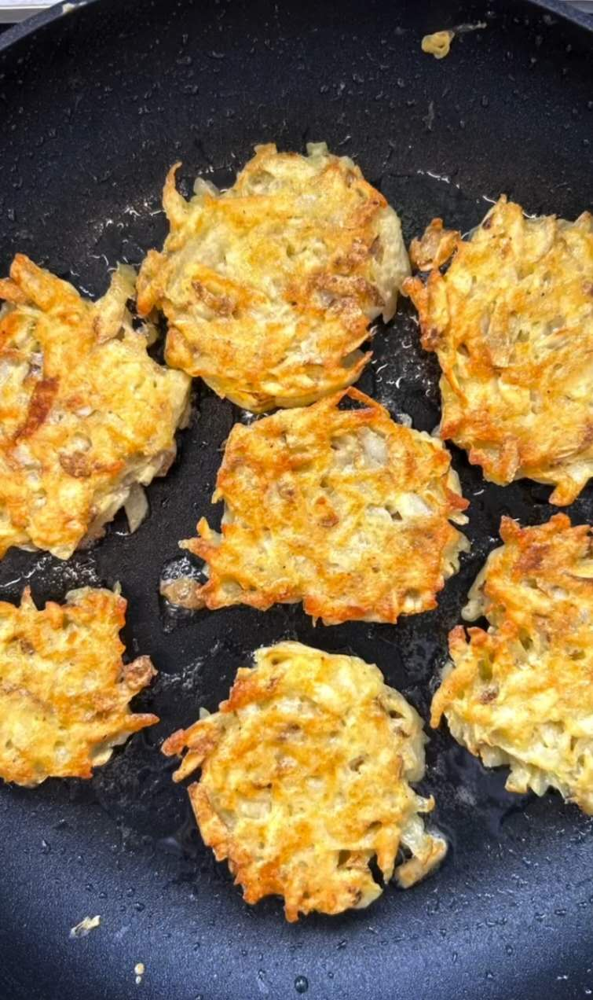
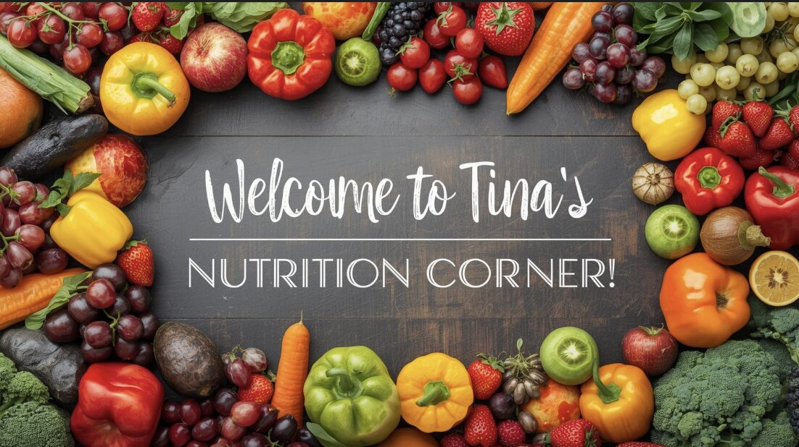

Journal
Kitchen gatherings, field visits, and thoughts along the way.

Volunteering in the Teaching Kitchen: We Tried Fried Bananas!
Frying bananas was a very fun kitchen experiment, but I actually ended up falling in love with the fresh pineapple and bean side dish instead lol
Read the story ↗
Golden, Crispy, and Safe: Lessons from the Potato Pancake Kitchen
Stepping into the teaching kitchen this week, where we made potato pancakes!
Read the story ↗
Pedaling for Smoothies: My Food Harvest Volunteer Experience
Making 200+ pedal-powered smoothies at the Food Harvest event was a busy but unforgettable volunteer experience!
Read the story ↗
No-Cook Guacamole from the Teaching Kitchen
Volunteering in the Teaching Kitchen, we made fresh guacamole!!
Read the story ↗My Journey into Nutrition
How I discovered my passion for nutrition and healthy living, and why it matters more than ever in our fast-paced world.
Read the story ↗
A Peek Inside the Fermentation Lab at Jiangnan University, China
Visiting a university fermentation lab opened my eyes to the precision and advanced technology behind the science of brewing.
Read the story ↗
A Tour to the Lingzhi Factory: Exploring the Ganoderma!
Visiting a massive Ganoderma processing plant really opened my eyes to the mountain cultivation and amazing uses of this unique and multi-purpose mushroom.
Read the story ↗
My Journey into Nutrition
My passion for nutrition and healthy living, and why it matters more than ever in our fast-paced world.
Read the story ↗